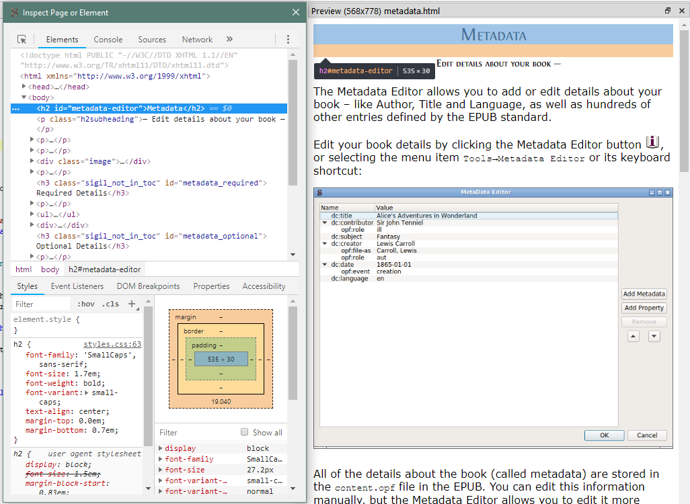

— Show Code View Changes —
Preview is a movable window that gives you a dynamically updated read-only view of what appears in Code View. You can also inspect your code and styles by clicking the Inspect button (</> icon) in the toolbar at the bottom of Preview.
You can use Preview to show the results of changes in your code (including immediate feedback of errors), and you can also open a CSS stylesheet to make changes that are shown in Preview.
Activate the Preview window by selecting the menu item or its keyboard shortcut:
You can toggle the Preview window open or closed with its shortcut, and even move the window to a second monitor if you have one.
The Preview window will be updated immediately when you click somewhere in Code View. It will also be updated after you stop typing for a short time.
If you click in Preview the Code View tab will sync to the same location.
The Inspector Widget is opened/closed by clicking the "</>" button on the toolbar at the bottom of Preview. You can resize and reposition it how you like, and Sigil will remember your settings

The Inspector window is an HTML developer’s tool that allows detailed examination of the code behind the book’s appearance. It is intended to allow you to see why specific sections of your book are displayed the way they are, and to make temporary changes to styles and text to see how they affect your text.
Any changes you make in the Inspector window are only temporary and are not saved!
For more information about using the Inspector built into Preview and specifically how to use it to determine the exact CSS being used for any particular tag, see this tutorial.